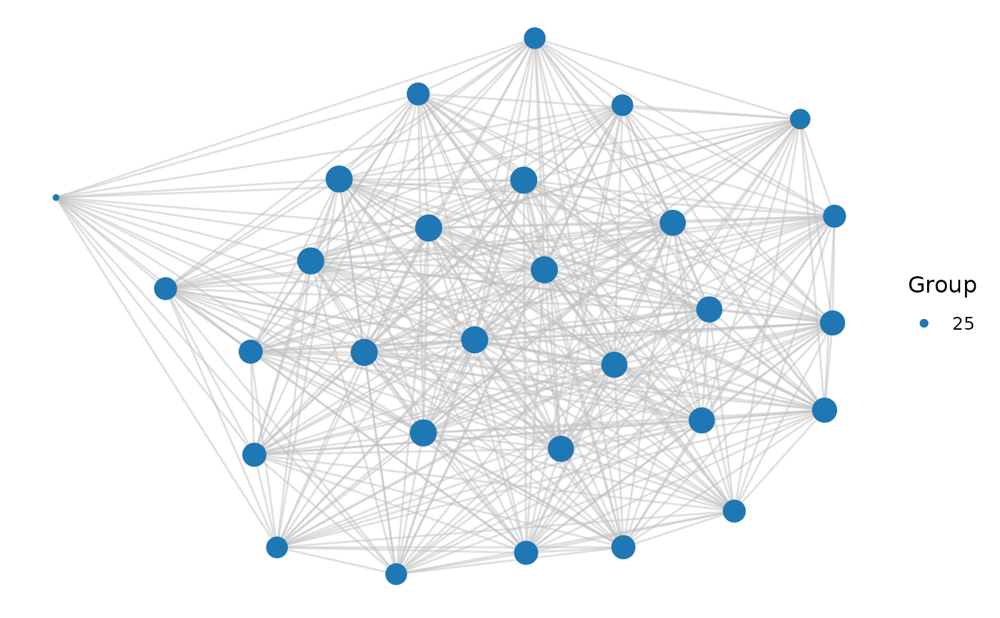
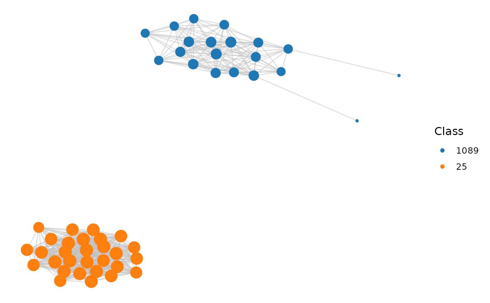
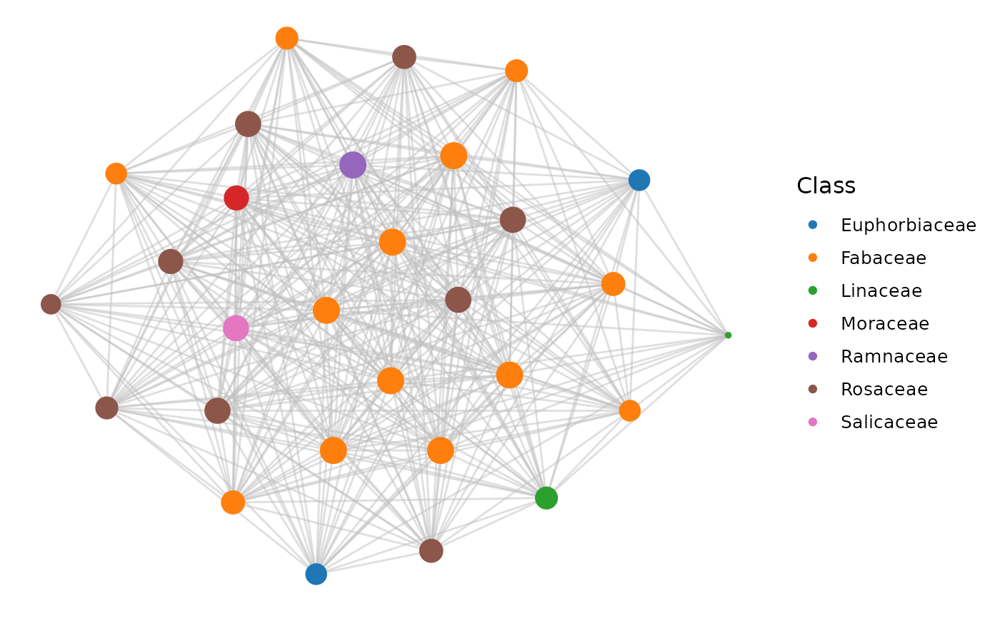

Plot network
plot_network(
network = NULL,
clusters = NULL,
cluster_id = NULL,
color_by = "cluster",
interactive = FALSE,
dim_interactive = c(600, 600)
)The synteny network represented as an edge list, which is a 2-column data frame with each member of the anchor pair in a column.
A 2-column data frame with the variables Gene
and Cluster representing gene ID and cluster ID, respectively,
exactly as returned by cluster_network.
Character scalar or vector with cluster ID. If more than one cluster is passed as input, clusters are colored differently.
Either "cluster" or a 2-column data frame with gene IDs in the first column and variable to be used for coloring (e.g., taxonomic information) in the second column.
Logical scalar indicating whether to display an interactive network or not. Default: FALSE.
Numeric vector of length 2 with the window dimensions of the interactive plot. If interactive is set to FALSE, this parameter is ignored.
A ggplot object with the network.
data(network)
data(clusters)
# Option 1: 1 cluster
cluster_id <- 25
plot_network(network, clusters, cluster_id)

# Option 2: 2 clusters
cluster_id <- c(25, 1089)
plot_network(network, clusters, cluster_id)

# Option 3: custom annotation for coloring
species_order <- c(
"vra", "van", "pvu", "gma", "cca", "tpr", "mtr", "adu", "lja",
"Lang", "car", "pmu", "ppe", "pbr", "mdo", "roc", "fve",
"Mnot", "Zjuj", "jcu", "mes", "rco", "lus", "ptr"
)
species_annotation <- data.frame(
Species = species_order,
Family = c(rep("Fabaceae", 11), rep("Rosaceae", 6),
"Moraceae", "Ramnaceae", rep("Euphorbiaceae", 3),
"Linaceae", "Salicaceae")
)
genes <- unique(c(network$node1, network$node2))
gene_df <- data.frame(
Gene = genes,
Species = unlist(lapply(strsplit(genes, "_"), head, 1))
)
gene_df <- merge(gene_df, species_annotation)[, c("Gene", "Family")]
plot_network(network, clusters, cluster_id = 25, color_by = gene_df)
